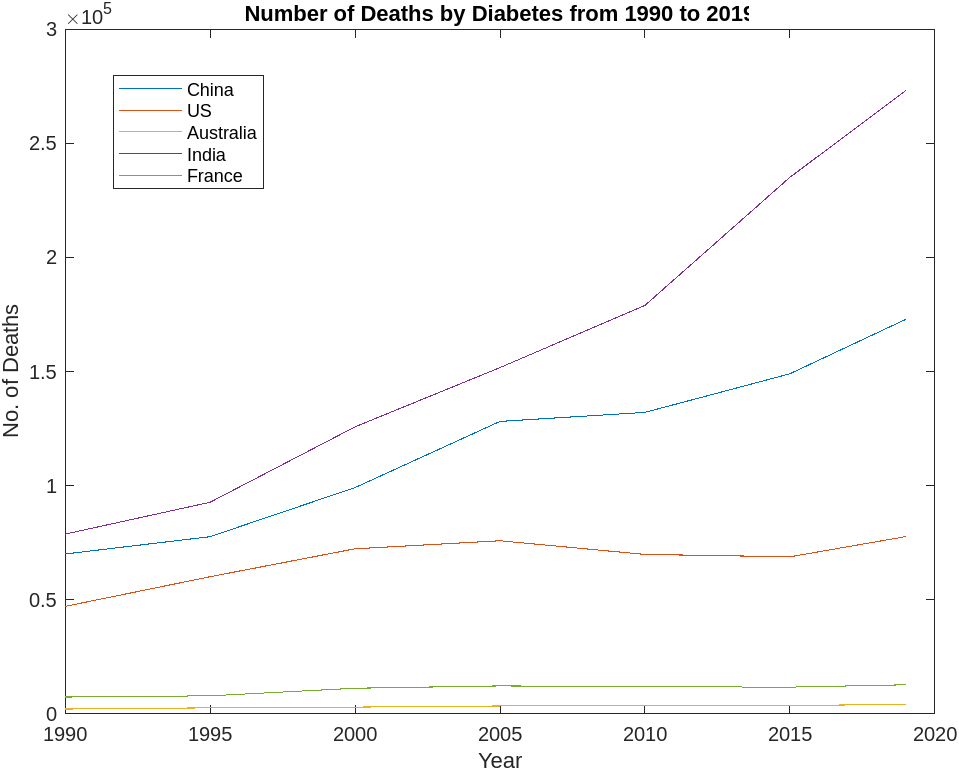
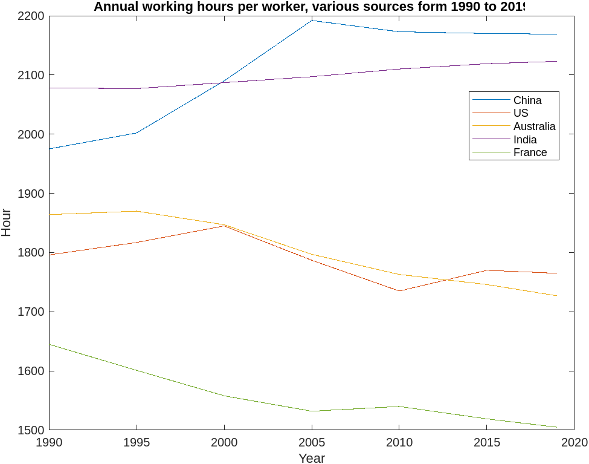
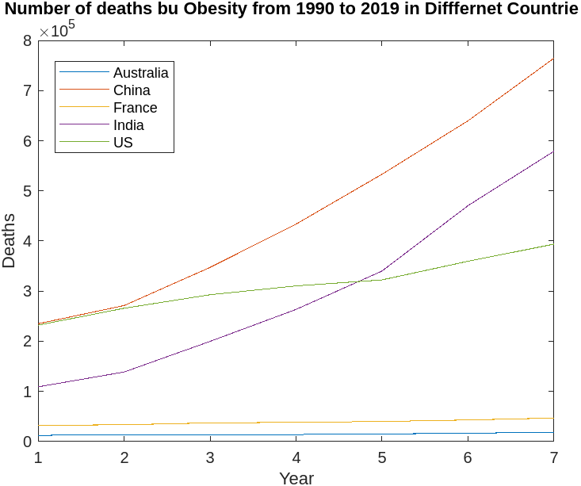
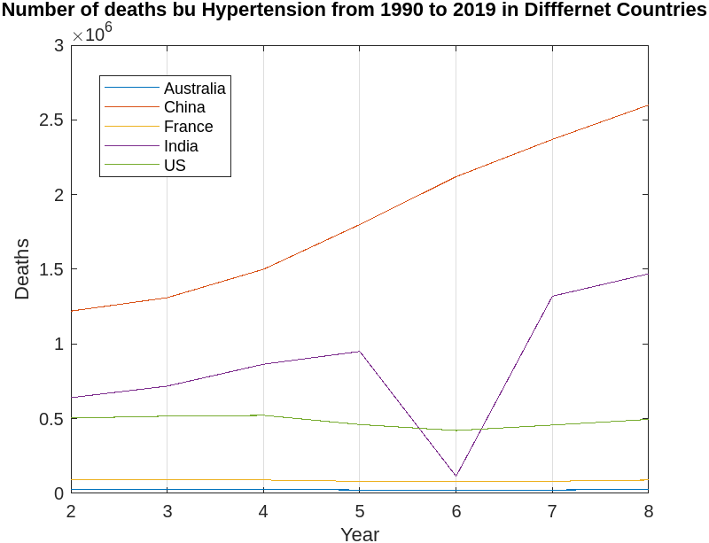
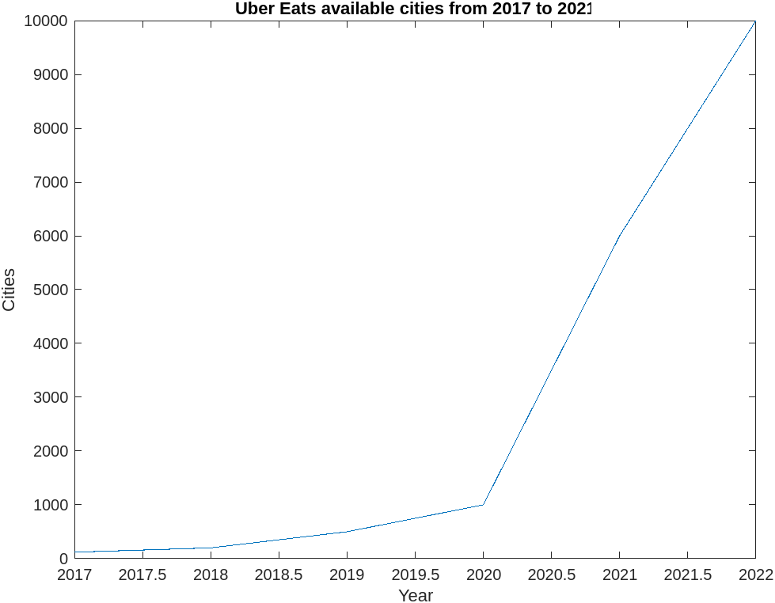
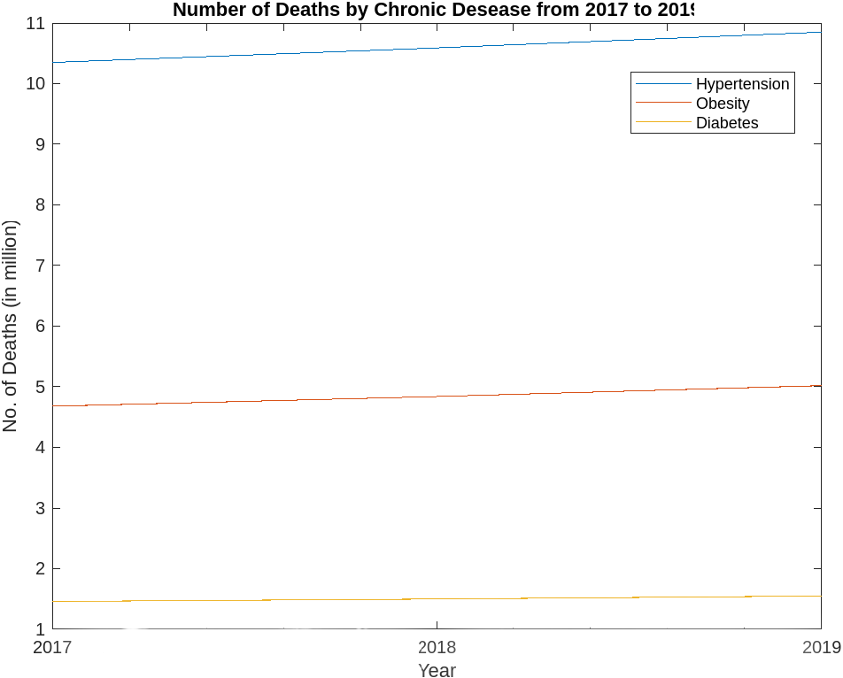
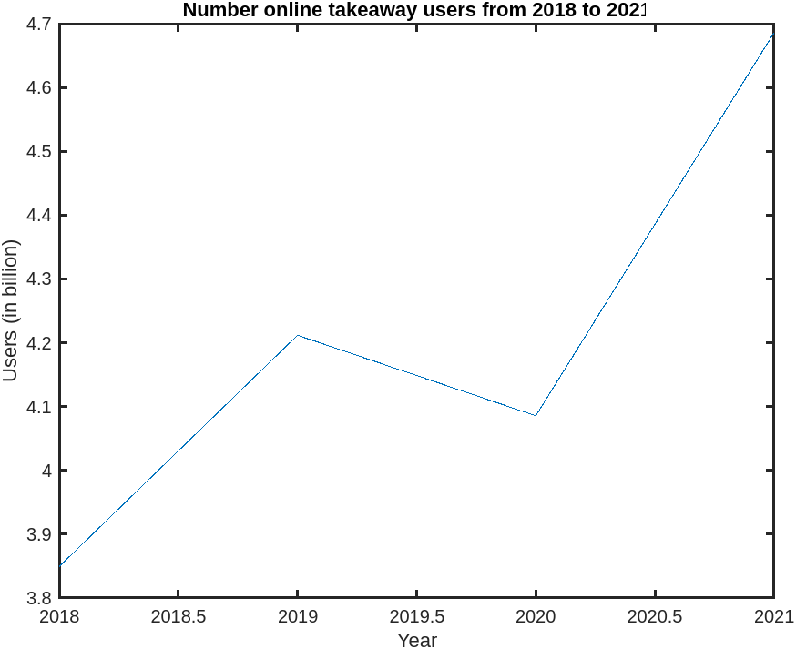

Diabetes
Result
 Peason Correlation
Data: China Diabetes and Working Hours
t = 4.338, df = 5, p-value = 0.007443
95 percent confidence interval:0.4107306 0.9835596
sample estimates:cor 0.8888606
Data: US Diabetes and Working Hours
t = -0.49279, df = 5, p-value = 0.643
95 percent confidence interval:-0.8332328 0.6418686
sample estimates:cor -0.2152185
Data: Australia Diabetes and Working Hours
t = -6.2698, df = 5, p-value = 0.001515
95 percent confidence interval:-0.9916052 -0.6495828
sample estimates:cor -0.9418921
Data: India Diabetes and Working Hours
t = 10.708, df = 5, p-value = 0.000123
95 percent confidence interval:0.8591623 0.9969982
sample estimates:cor 0.9788836
Data: France Diabetes and Working Hours
t = -7.7114, df = 5, p-value = 0.0005853
95 percent confidence interval:-0.9943307 -0.7493793
sample estimates:cor -0.9604374
Obesity
Result
Peason Correlation
Data: China Obesity and Working Hours
t = 2.9912, df = 5, p-value = 0.0304
95 percent confidence interval:0.1206715 0.9693387
sample estimates:cor 0.8009456
Data: US Obesity and Working Hours
t = -1.4241, df = 5, p-value = 0.2137
95 percent confidence interval:-0.9186256 0.3625441
sample estimates:cor -0.5371706
Data: Australia Obesity and Working Hours
t = -5.4243, df = 5, p-value = 0.002885
95 percent confidence interval:-0.9890123 -0.5644538
sample estimates:cor -0.9245266
Data: India Obesity and Working Hours
t = 9.6909, df = 5, p-value = 0.0001987
95 percent confidence interval:0.8314092 0.9963534
sample estimates:cor 0.9743975
Data: France Obesity and Working Hours
t = -5.0058, df = 5, p-value = 0.004085
95 percent confidence interval:-0.9872760 -0.5120854
sample estimates:cor -0.9130456
Hypertension
Result
Peason Correlation
Data:China Hypertension and Working Hours
t = 4.338, df = 5, p-value = 0.007443
95 percent confidence interval: 0.4107306 0.9835596
sample estimates:cor 0.8888606
Data:US Hypertension and Working Hours
t = 3.6796, df = 5, p-value = 0.0143
95 percent confidence interval: 0.2848084 0.9781506
sample estimates:cor 0.8545788
Data:Australia Hypertension and Working Hours
t = 2.5857, df = 5, p-value = 0.04909
95 percent confidence interval: 0.007762072 0.961675033
sample estimates:cor 0.7563988
Data: India Hypertension and Working Hours
t = 10.708, df = 5, p-value = 0.000123
95 percent confidence interval: 0.8591623 0.9969982
sample estimates:cor 0.9788836
Data: France Hypertension and Working Hours
t = 1.8604, df = 5, p-value = 0.1219
95 percent confidence interval: -0.2189107 0.9399305
sample estimates:cor 0.6395845
Fast Food Culture
Result: Worldwide
 Peason Correlation
Data: Worldwide Hypertension and Uber Eat Cities
t = 3.2386, df = 1, p-value = 0.1907
sample estimates:cor 0.955487
Data: Worldwide Obesity and Uber Eat Cities
t = 3.3679, df = 1, p-value = 0.1837
sample estimates:cor 0.9586343
Data: Worldwide Diabetes and Uber Eat Cities
t = 3.7816, df = 1, p-value = 0.1646
sample estimates:cor 0.9667699
Result: China
As Uber Eat appllication is not popular in China therefore I selected the number of online takeaways
Peason Correlation
Hypertension:0.335055 Obesity:0.8642624 Diabetes:0.5619049